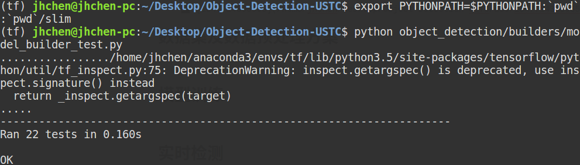
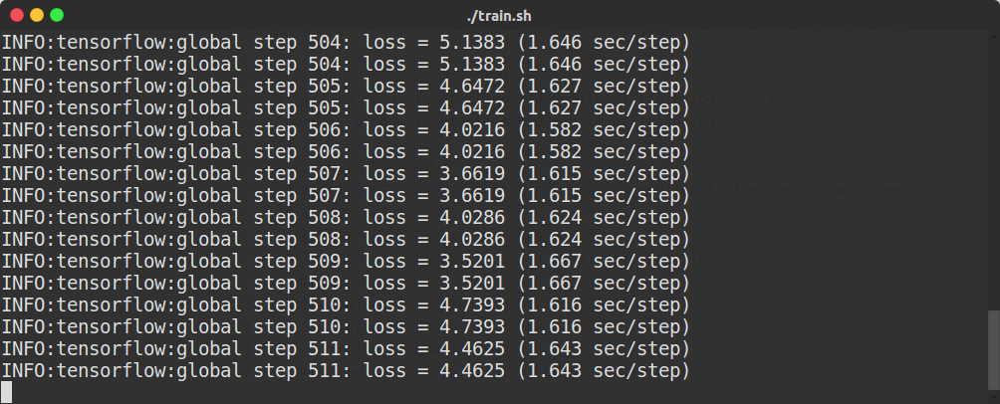
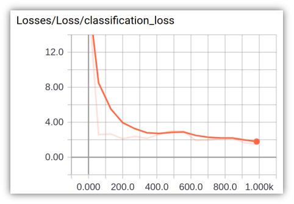
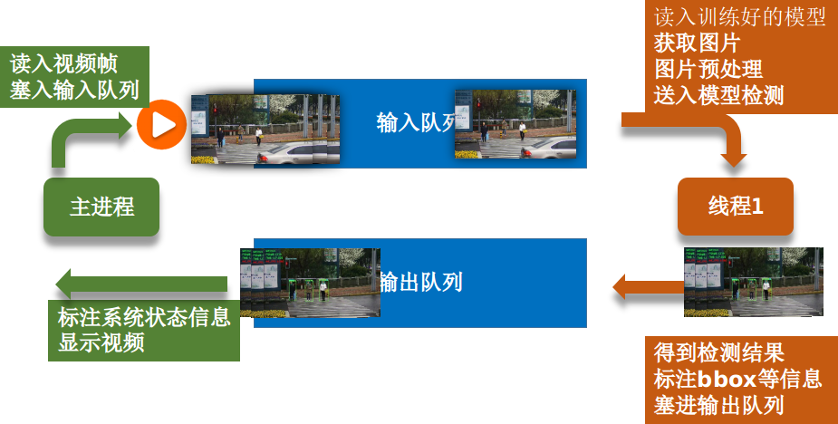
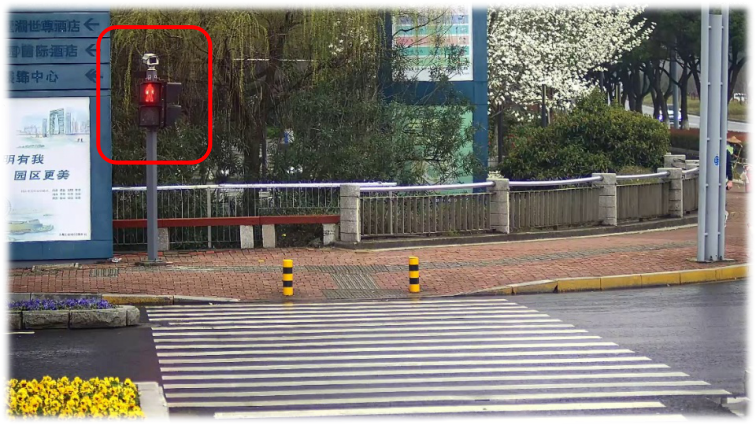
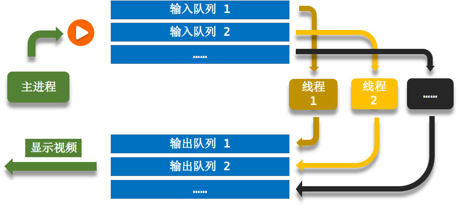

（文章末尾有源代码地址）
实验目的
使用TensorFlow Object Detection API 进行实时目标检测（基于SSD模型）
任务列表：
- 行人识别
- 人脸识别
- 交通灯识别
- 实时检测（平均FPS>15）
- 使用tflite将模型移植到嵌入式设备
目录结构
为了先对工程有个整体性的了解，故将此项目的目录结构列出如下：
1 | Object-Detection-USTC |
实验环境安装
下载Tensorflow对象检测API
Tensorflow/models的github地址：https://github.com/tensorflow/models
对象检测API的目录：tensorflow/models/research/object_detection
通过以下命令将其克隆到本地工作目录
1 | git clone https://github.com/tensorflow/models.git |
安装依赖库
本次实验使用的是TensorFlow Object Detection API，根据官方文档介绍，需要安装以下库：
- Protobuf 3.0.0
- Python-tk
- Pillow 1.0
- lxml
- tf Slim (which is included in the “tensorflow/models/research/“ checkout)
- Jupyter notebook
- Matplotlib
- Tensorflow (>=1.9.0)
- Cython
- contextlib2
- cocoapi
其中，关于Tensorflow的详细安装步骤，可以按照Tensorflow官方安装说明进行操作。一般安装好python之后可以使用以下命令之一安装Tensorflow：
1 | # CPU版本 |
安装GPU版本的tensorflow可以参考这篇文章
其余的库可以通过apt-get安装在Ubuntu 16.04上：
1 | sudo apt-get install protobuf-compiler python-pil python-lxml python-tk |
pip默认将Python包安装到系统目录（例如
/usr/local/lib/python3.6），这需要root访问权限。
--user选项的意思是：在你的主目录中创建pip安装包，而不需要任何特殊权限。
或者，你也可以使用pip安装依赖项：
1 | pip install --user Cython |
Protobuf编译
Tensorflow对象检测API使用Protobufs配置模型和训练参数。在使用框架之前，必须编译Protobuf库，可以通过在目录tensorflow/models/research/运行以下命令来完成：
1 | # From tensorflow/models/research/ |
如果在编译时遇到错误，则可能使用的是不兼容的protobuf编译器。如果是这种情况，可以使用手动安装来解决。
手动protobuf编译器安装和使用
如果你使用的是linux：
下载并安装protoc的3.0版本，然后解压缩该文件。在目录tensorflow/models/research/运行以下命令：
1 | # From tensorflow/models/research/ |
再次运行编译过程，但使用刚才我们自己下载的protoc版本，在目录tensorflow/models/research/运行以下命令：
1 | # From tensorflow/models/research/ |
MacOS可以参考这个链接
将库添加到PYTHONPATH
在本地运行时，tensorflow/models/research/和tensorflow/models/research/slim目录需要添加到PYTHONPATH，可以通过在目录tensorflow/models/research/运行以下命令来完成：
1 | # From tensorflow/models/research/ |
每次运行新终端时，都要重新输入此命令，如果希望避免繁琐的操作，可以将其作为新行追加到
~/ .bashrc文件的末尾，将“pwd”替换此项目目录的绝对路径。
测试安装
到现在所有的环境配置就完成了，可以通过运行以下命令来测试是否已正确安装Tensorflow Object Detection API：
1 | python object_detection/builders/model_builder_test.py |
如果出现下面的结果就表示安装成功：

建立自己的工作空间
因为tensorflow/models/*里面有太多其他的模块了，我们这次实验只需要用到其中的tensorflow/models/research/object_detection，所以在环境搭建好之后我们建立一个自己的项目文件夹，让整个工程更简洁。
首先新建文件夹Object-Detection-USTC，然后将刚才目录tensorflow/models/research/中的object_detection文件夹和slim文件夹分别复制一份到Object-Detection-USTC文件夹中。
此时的工程目录结如下：
1 | Object-Detection-USTC |
数据集及数据预处理方案
数据集
数据集1：Penn-Fudan Database
来源：https://www.cis.upenn.edu/~jshi/ped_html/
内容：这是一个图像数据集，其中包含可以用于行人检测的图片。图片来自校园和城市街道周围的场景，我们对这些图片中感兴趣的对象是行人，每张图片中至少有一个行人。此数据集共有170张图片，345个行人标注，其中96张图像来自宾夕法尼亚大学，其余74张图片来自复旦大学。
目录结构：
1
2
3
4
5
6
7
8
9
10
11
12
13
14
15PennFudanPed
├── added-object-list.txt
├── Annotation # 标注文件
│ ├── FudanPed00001.txt
│ ├── FudanPed00002.txt
│ └── ...
├── PedMasks # 遮罩文件，用于做像素级别的图像分割，本次实验不涉及
│ ├── FudanPed00001_mask.png
│ ├── FudanPed00002_mask.png
│ └── ...
├── PNGImages # 图片
│ ├── FudanPed00001.png
│ ├── FudanPed00002.png
│ └── ...
└── readme.txt缺点：不含红绿灯、不含人脸标注
数据集2
来源：监控视频2.mp4
内容：此数据集为我们将视频中的帧截取保存（每3帧截取一张）后，使用标注精灵工具人工标注而成，一共有大约600张标注有行人、人脸、红灯、绿灯的图片，最后标注的保存格式为
PascalVoc，方便后面将其转换成tfrecord格式。
转换数据集格式
根据官方文档，要在Tensorflow Object Detection API中使用我们自己的数据集，必须将其转换为TFRecord文件格式。
数据集1
建立标签地图（Label Maps）
每个数据集都需要具有与之关联的标签映射，此标签映射定义了从字符串类名（如：‘person’）到整数类Ids（如：1）的映射，所以我们首先建立数据集的标签地图（Label Maps）。
注意：标签地图的id号应该从 1开始，不能从0开始。
在目录
Object-Detection-USTC/object_detection/data/下新建文件PennFudanPed_label_map.pbtxt，并写入以下内容：1
2
3
4item {
id: 1
name: 'person'
}因为数据集1中的标注只有行人，所以只用在Label Maps中写一个item。
编写转换脚本
将数据集1（Penn-Fudan Database）下载解压后放入目录
Object-Detection-USTC/object_detection/data/。因为此数据集的标注文档（如：
PennFudanPed/Annotation/FudanPed00001.txt）不规则，所以我们需要自己写一个脚本来将这个数据集转换成tfrecord格式。在目录
Object-Detection-USTC/下新建文件create_PennFudanPed_tfrecord.py，并写入以下内容：1
2
3
4
5
6
7
8
9
10
11
12
13
14
15
16
17
18
19
20
21
22
23
24
25
26
27
28
29
30
31
32
33
34
35
36
37
38
39
40
41
42
43
44
45
46
47
48
49
50
51
52
53
54
55
56
57
58
59
60
61
62
63
64
65
66
67
68
69
70
71
72
73
74
75
76
77
78
79
80
81
82
83
84
85
86
87
88
89
90
91
92
93
94
95
96
97
98
99
100
101
102
103
104
105
106
107
108
109
110
111
112
113
114
115
116
117
118
119
120
121
122
123
124
125
126
127
128# -*- coding: utf-8 -*-
# @File : create_PennFudanPed_tfrecord.py
# @Author : jianhuChen
# @Date : 2018-12-23 16:53:11
# @License : Copyright(C), USTC
# @Last Modified by : jianhuChen
# @Last Modified time: 2019-01-17 17:54:31
import os
import io
import pandas as pd
import numpy as np
import tensorflow as tf
from object_detection.utils import dataset_util
from tqdm import *
def data_pre_processing(annotation_path):
datas = [] # 存储图片信息
files = os.listdir(annotation_path)
for file in files:
sample = {}
xmins = []
xmaxs = []
ymins = []
ymaxs = []
classes_text = []
classes = []
with open(annotation_path+'/'+file, 'r') as fp:
lines = fp.readlines()
for line in lines:
if line.startswith('Image filename :'):
filename = line.strip().split('/')[-1][:-1] # get image name
image_format = filename.split('.')[-1] # get image format
elif line.startswith('Image size (X x Y x C) :'):
width_height_channel = line.split(':')[-1].split('x')
width = eval(width_height_channel[0].strip()) # get image width
height = eval(width_height_channel[1].strip()) # get image height
elif line.startswith('Original label for object'):
label = line.split(':')[-1].strip()[1:-1]
if label == 'PennFudanPed': # get the object id
classes.append(1)
classes_text.append('person'.encode('utf8')) # get the object label
elif line.startswith('Bounding box for object'):
Xmin_Ymin_Xmax_Ymax = line.split(':')[-1].strip() # like:(160, 182) - (302, 431)
xmin = eval(Xmin_Ymin_Xmax_Ymax.split(',')[0][1:])
ymin = eval(Xmin_Ymin_Xmax_Ymax.split(',')[1].partition(') - (')[0])
xmax = eval(Xmin_Ymin_Xmax_Ymax.split(',')[1].partition(') - (')[2])
ymax = eval(Xmin_Ymin_Xmax_Ymax.split(',')[2][:-1])
xmins.append(xmin)
xmaxs.append(xmax)
ymins.append(ymin)
ymaxs.append(ymax)
# 将该图片所有属性添加到字典里
sample['filename'] = filename
sample['image_format'] = image_format
sample['width'] = width
sample['height'] = height
sample['classes_text'] = classes_text
sample['classes'] = classes
sample['xmins'] = xmins
sample['xmaxs'] = xmaxs
sample['ymins'] = ymins
sample['ymaxs'] = ymaxs
# 将该图片添加到数据集列表里
datas.append(sample)
return datas
def create_tf_example(sample, image_path):
height = sample['height']
width = sample['width']
filename = sample['filename']
image_format = sample['image_format']
# 注意：坐标需要标准化
xmins = np.array(sample['xmins'])/width
xmaxs = np.array(sample['xmaxs'])/width
ymins = np.array(sample['ymins'])/height
ymaxs = np.array(sample['ymaxs'])/height
classes_text = sample['classes_text']
classes = sample['classes']
# 读取图片数据
encoded_img = tf.gfile.FastGFile(image_path+'/'+sample['filename'],'rb').read()
tf_example = tf.train.Example(features=tf.train.Features(feature={
'image/height': dataset_util.int64_feature(height),
'image/width': dataset_util.int64_feature(width),
'image/filename': dataset_util.bytes_feature(filename.encode('utf8')),
'image/source_id': dataset_util.bytes_feature(filename.encode('utf8')),
'image/encoded': dataset_util.bytes_feature(encoded_img),
'image/format': dataset_util.bytes_feature(image_format.encode('utf8')),
'image/object/bbox/xmin': dataset_util.float_list_feature(xmins),
'image/object/bbox/xmax': dataset_util.float_list_feature(xmaxs),
'image/object/bbox/ymin': dataset_util.float_list_feature(ymins),
'image/object/bbox/ymax': dataset_util.float_list_feature(ymaxs),
'image/object/class/text': dataset_util.bytes_list_feature(classes_text),
'image/object/class/label': dataset_util.int64_list_feature(classes),
}))
return tf_example
def main(_):
# 标注文件路径
annotation_path = r'object_detection/data/PennFudanPed/Annotation'
# 图片文件路径
image_path = r'object_detection/data/PennFudanPed/PNGImages'
# tfrecord输出路径
output_path = r'object_detection/data'
train_writer = tf.python_io.TFRecordWriter(os.path.join(output_path, 'PennFudanPed_train.record'))
val_writer = tf.python_io.TFRecordWriter(os.path.join(output_path, 'PennFudanPed_val.record'))
annotation_datas = data_pre_processing(annotation_path)
for sample in tqdm(annotation_datas[:]):
tf_sample = create_tf_example(sample, image_path)
train_writer.write(tf_sample.SerializeToString())
print('Successfully created the TFRecords(train).')
for sample in tqdm(annotation_datas[150:]):
tf_sample = create_tf_example(sample, image_path)
val_writer.write(tf_sample.SerializeToString())
print('Successfully created the TFRecords(val).')
train_writer.close()
val_writer.close()
if __name__ == '__main__':
tf.app.run()执行此脚本后，会在目录
Object-Detection-USTC/object_detection/data/下生成两个tfrecord文件：PennFudanPed_train.record和PennFudanPed_val.record，它们分别是数据集1对应的tfrecord格式的训练集和验证集。此脚本编写时参考此官方文档：点击查看
数据集2
建立标签地图（Label Maps）
将数据集2（文件夹名字为：VOC2007）格式组织好后放入目录
Object-Detection-USTC/object_detection/data/。接下来建立数据集2的标签地图（Label Maps），在目录
Object-Detection-USTC/object_detection/data/下新建文件pascal_label_map.pbtxt，并写入以下内容：1
2
3
4
5
6
7
8
9
10
11
12
13
14
15
16
17
18
19
20item {
name: "person"
id: 1
display_name: "person"
}
item {
name: "face"
id: 2
display_name: "face"
}
item {
name: "red_light"
id: 3
display_name: "red_light"
}
item {
name: "green_light"
id: 4
display_name: "green_light"
}因为数据集2中标注了4类对象，所以只用在Label Maps中有4个item。
运行转换脚本
此数据集为我们自己人工标注，保存格式为
PascalVoc（与ImageNet采用的格式相同），而tensorflow提供了将PascalVoc格式的数据集转换成tfrecord格式的脚本，路径为Object-Detection-USTC/object_detection/dataset_tools/create_pascal_tf_record.py，所以我们不用自己写了。接下来写一个shell脚本来执行上述文件，在
Object-Detection-USTC/目录下新建文件create_pascal_tfrecord.sh并写入如下命令：1
2
3
4
5
6
7
8
9python object_detection/dataset_tools/create_pascal_tf_record.py \
--label_map_path=object_detection/data/pascal_label_map.pbtxt \
--data_dir=object_detection/data --year=VOC2007 --set=train \ # 生成训练集
--output_path=object_detection/data/pascal_train.record # 训练集输出路径
python object_detection/dataset_tools/create_pascal_tf_record.py \
--label_map_path=object_detection/data/pascal_label_map.pbtxt \
--data_dir=object_detection/data --year=VOC2007 --set=val\ # 生成验证集
--output_path=object_detection/data/pascal_val.record # 验证集输出路径PascalVoc格式的数据集2存放目录结构为:
1
2
3
4
5
6
7
8Object-Detection-USTC
└── object_detection
└── data
└── VOC2007
├── Annotations
├── ImageSets
├── JPEGImages
└── readme.txt上面的shell脚本中，参数意义如下：
参数
data_dir指定数据目录object_detection/data，目录里面有 VOC2007文件夹，VOC2007文件夹里面有存放图片的JPEGImages，存放标注分类坐标信息Annotations。ImageSets/Main 目录下有四个文件:
test.txt是测试集，train.txt是训练集，val.txt是验证集，trainval.txt是训练和验证集。参数
set指定要使用的数据集是那个，这里使用了train和val两个。
然后在
Object-Detection-USTC/目录下行运行这个脚本就可以转换成功：1
./create_pascal_tfrecord.sh
转换完成后会在目录
Object-Detection-USTC/object_detection/data/下生成两个tfrecord文件：pascal_train.record和pascal_val.record，它们分别是数据集2对应的tfrecord格式的训练集和验证集。此处之所以要写shell脚本的原因是：上面的命令太长了，每次执行都要在命令行敲一遍太麻烦，写shell脚本的好处是以后每次执行上面的命令的时候只用在命令行输入这个脚本的名字就行了
转换数据集格式到此结束，总结一下，在
Object-Detection-USTC/object_detection/data目录下有以下文件：- pascal_label_map.pbtxt # 数据集2生成的tfrecord格式的训练集
- pascal_train.record # 数据集2生成的tfrecord格式的训练集
- pascal_val.record # 数据集2生成的tfrecord格式的验证集
- PennFudanPed # 数据集1（Penn-Fudan Database）
- PennFudanPed_label_map.pbtxt # 数据集1的Label Maps
- PennFudanPed_train.record # 数据集1生成的tfrecord格式的训练集
- PennFudanPed_val.record # 数据集1生成的tfrecord格式的验证集
- VOC2007 # 数据集2
模型训练
下载预训练模型
为了加快训练速度，我们需要基于谷歌提供的预训练模型来微调参数（即迁移学习），官方提供了不少预训练模型，点击查看。
我们对比尝试了以下训练模型：
| 模型 | 平均帧率 |
|---|---|
| faster_rcnn_inception_v2_coco | 4.92 |
| SSD-MobileNet-v1-2017 | 14.57 |
| SSD-MobileNet-v1-2018 | 18.88 |
| SSD-MobileNet-v2-2018 | 14.33 |
上表的数据是在视频实时检测实现之后直接拿这些预训练模型测试所得
最终选择了SSD-MobileNet-v2-2018预训练模型进行迁移学习训练，因为它能相对较好的兼顾实时性和准确性。
在工程目录Object-Detection-USTC/object_detection/下新建文件夹ssd_mobilenet（此文件夹的用途是存放与模型相关的文件，包括待会儿我们自己训练出来的模型），将下载好的SSD-MobileNet-v2-2018压缩包解压后，放入目录Object-Detection-USTC/object_detection/ssd_mobilenet/，会得到如下目录结构：
1 | Object-Detection-USTC |
修改管道配置文件
将目录Object-Detection-USTC/object_detection/ssd_mobilenet/ssd_mobilenet_v2_coco_2018_03_29中的管道文件pipeline.config复制到上级目录（ssd_mobilenet目录）下，为了好辨别，将此文件更名为pipeline_ssd_mobilenet_v2_coco_2018_03_29.config，再修改如下几个位置：
（以下配置以使用数据集2训练为例，使用数据集1训练同理也可做相应的配置）
修改类别数
1
num_classes:5
修改预训练模型位置
1
fine_tune_checkpoint: "/home/jhchen/Desktop/Object-Detection-USTC/object_detection/ssd_mobilenet/ssd_mobilenet_v2_coco_2018_03_29/model.ckpt"
为避免找不到文件的位置，此处使用绝对路径，下同
修改训练次数
1
num_steps: 1000
修改训练数据位置
1
2
3
4
5
6
7
8train_input_reader {
# 标签地图（Label Maps）配置文件路径
label_map_path: "/home/jhchen/Desktop/Object-Detection-USTC/object_detection/data/pascal_label_map.pbtxt"
tf_record_input_reader {
# 训练集径
input_path: "/home/jhchen/Desktop/Object-Detection-USTC/object_detection/data/pascal_train.record"
}
}修改验证评估数据位置（可选）
1
2
3
4
5
6
7
8eval_input_reader {
label_map_path: "/home/jhchen/Desktop/Object-Detection-USTC/object_detection/data/pascal_label_map.pbtxt"
shuffle: false
num_readers: 1
tf_record_input_reader {
input_path: "/home/jhchen/Desktop/Object-Detection-USTC/object_detection/data/pascal_val.record"
}
}
开始训练
Tensorflow官方提供了训练的脚本，路径为Object-Detection-USTC/object_detection/legacy/train.py，接下来，我们要调用它来开始我们的迁移学习训练。
在工程目录Object-Detection-USTC/下新建一个训练的脚本文件train.sh，并写入以下内容：
1 | # 如果不存在这个路径，就递归地创建它 |
文件夹
Object-Detection-USTC/object_detection/ssd_mobilenet/train_logs中存放模型训练过程中产生的记录文件，后面需要通过这个文件夹内的文件来导出我们可以使用的模型。
然后在Object-Detection-USTC/目录下行运行这个脚本就可以开始训练：
1 | ./train.sh |
看到如下的提示信息就表示开始训练了

可视化训练过程
在训练的过程中，可以同时通过tensorboard来查看训练的情况。新开一个终端，在Object-Detection-USTC/目录下，运行如下命令：
1 | tensorboard --logdir=object_detection/ssd_mobilenet/train_logs |
在浏览器打开http://localhost:6006，即可看到Loss等信息的实时变化情况。

导出模型
训练结束后，在Object-Detection-USTC/object_detection/ssd_mobilenet/train_logs路径下，可以看到一些checkpoint文件，如：
1 | train_logs |
meta保存了graph和metadata，ckpt保存了网络的weights。
进行预测时只需模型和权重，不需要metadata，故可使用tensorflow官方提供的脚本导出训练好的模型，此脚本路径为Object-Detection-USTC/object_detection/export_inference_graph.py。
在Object-Detection-USTC/目录下新建一个导出模型图的shell脚本export_model.sh，并写入以下内容：
1 | # 如果不存在这个路径，就递归地创建它 |
文件夹
Object-Detection-USTC/object_detection/ssd_mobilenet/output_inference_graph用来存放我们导出的模型。
然后在Object-Detection-USTC/目录下行运行这个脚本就可以开始导出我们刚才训练好的模型：
1 | ./export_model.sh |
导出后文件夹output_inference_graph中的内容与我们下载的预训练模型的目录类似，如下：
1 | output_inference_graph |
至此，我们自己的模型已经训练完成，待会儿就可以用它来进行行人、人脸等对象的检测了。
还可以通过官方提供的测试程序（
Object-Detection-USTC/object_detection/object_detection_tutorial.ipynb）来看看模型的检测效果，需要用Jupyter Notebook打开，具体的测试方法打开上述文档就能看到，只需要将其中的模型替换为我们刚才训练得到的模型即可。（也可以点击这里在github上查看此文档。）
实时检测
实时检测方案
实时检测的意思是：将视频中的每一帧图像送入刚才训练好的模型中进行对象检测，再将模型识别出的对象信息标注（画边界框，置信度等）到这一帧图像上并显示出来，速度非常快时就能达到像播放视频一样的效果。
但是如果我们的程序真的向上述的过程一样，每读取一帧图像，再经过模型检测，再显示出来，这样效率显然很低，实时性极差，我们可以引入线程和队列来提升实时性：
整个实时检测方案的流程如下图所示：

主进程做的事情图中用深绿色标出，线程1做的事情图中用黄色标出。
运行过程：
主程序读入视频并不断将这些帧按顺序塞入输入队列，线程1读入我们刚才训练好的模型，然后按顺序不断地从输入队列获取图片，将图片进行优化处理（调整对比度和亮度），再送入模型进行检测，如此，我们就能得到模型的检测结果，接下来线程1会将模型检测出的对象信息（bbox、置信度等）标注到图片上，然后将此标注好的图片塞入输出队列。主进程除了读入视频并将之入输入队列外，同时还会不断地从输出队列里面取图片并显示。
注意：上述过程中，主进程和线程1是并行执行的。
总结一下上图的运行过程，其中包含以下几个对象：
输入队列：从主进程接收原视频帧，传给线程1
输出队列：接收经线程1处理后的视频帧，回传给主进程，由主进程来显示
输入队列和输出队列的作用是方便主进程和线程1之间进行通信
主进程：负责以下任务
- 读入视频帧
- 将视频帧塞入输入队列
- 显示识别后的视频帧
- 检测按键
- 计算系统运行信息（播放速度、已处理帧数、已花时间等信息）
最后两项任务上图中未体现，下文会详细介绍
线程1：负责以下任务
- 读入训练好的模型
- 从输入队列获取图片
- 图片预处理
- 送入模型检测
- 得到检测结果
- 标注bbox等信息
- 将标注后的视频帧塞入输出队列
改进实时检测效果
使用上面的实时检测方案后，能达到较好的实时检测效果，但是我们还可以通过下面的方法来改进我们的检测准确率和实时性。
准确率改进方案
改变图片的对比度和亮度（OpenCV基础知识）
观察下面这张图片中的红框处，我们发现交通灯的颜色几乎快要与背景色融为一体了，所以我们可以在把图片送入模型检测之前，对其做适当的预处理，从而使得模型能更容易地检测出这些对象。

本次实验中，我们使用opencv中的基础知识改变了图片的对比度和亮度来达到上述效果。
使用类似于集成学习的方案：模型1+模型2同时检测
在测试过程中我们发现，我们自己训练出的模型（模型1）对人脸（face）和行人（person）的识别效果很好，对交通灯（traffic_light）的识别效果欠佳，而模型2——预训练模型
SSD-MobileNet-v2-2018（微软coco数据集训练过）对交通灯的识别效果很好，所以我们尝试将每帧图片都送入两个模型检测，最终识别结果取模型1的人脸、行人和模型2的交通灯综合的结果。模型1对交通灯识别效果欠佳的原因是：模型1经数据集2训练而得，而数据集2中交通灯的位置始终不变，相当于整个数据集只有一个交通灯对象，最终导致训练出的模型对交通灯不敏感。
实时性改进方案
使用上述的两个模型同时检测的方案后，毋庸置疑的是检测时间会大幅增加，于是我们又尝试了下述的方案来提升系统的实时性。
改用检测时间更短的预训练模型
对比尝试了常用的对象识别的网络模型，最终选择了SSD-MobileNet这种网络进行迁移学习，因为它能相对较好地在实时性和准确性之间取得平衡。
每两帧检测一次（奇数帧检测，偶数帧不检测）
我们此次的实验检测的目标对象为行人、人脸、交通灯，而观察视频发现这三者其实在较短的时间内位移量并不大，所以我们可以通过隔一帧检测一次对象的方法来成倍地提升系统实时性，具体做法是：我们对每一帧图像进行编号$（1,2,…）$，在将图像送入模型检测之前，先判断它的编号，如果编号为奇数，就送入模型检测，如果是偶数就不检测此帧，在标注时沿用上一帧检测出来的信息。
注意：
- 如果是奇数帧检测，偶数帧不检测，那么编号一定要从1开始而不能从0开始，因为如果从0开始编号，那么在判断第0帧是否检测时结果为不检测，标注信息沿用上次的检测结果，但是没有上一帧。同理，如果是偶数帧检测，奇数帧不检测，那么编号应该从偶数（如：0或2）开始。
- 如果检测的目标对象包含类似于车（car）这种短时间内有较大位移的物体，那么此方法会失效。
使用多线程+多队列
上述的方案中，使用线程+队列的方式能大幅提升系统的实施性，于是我们设想，使用多线程+多队列会不会能继续提升系统的实时性呢？
使用多线程+多队列的系统运行过程如下图所示：

运行过程与之前分析的线程+队列方案类似，只是现在有多个线程来同时跑模型处理图像了。
测试结果显示，多线程+多队列的方法似乎不能很好地提高实时性了，分析其原因，有以下几点：
- 查了资料发现，python中的线程似乎有点儿鸡肋，多线程更适合做一些并行I/O操作，而并行计算操作似乎效率并不会提升…
- 线程的工作原理是通过操作系统来分时间片轮转调度他们，类似于通信中的“时分复用”，所以实际上这么多线程还是运行在这1颗核心上
- 开启多个线程会增加操作系统调度和切换线程时的开销，占用计算机资源
代码详解
（下文中的代码都有详细的中文注释）
在目录Object-Detection-USTC/下新建文件object_detection_video.py用于对视频进行实时检测。
首先导入相关的库：
1 | import tensorflow as tf |
Object-Detection-USTC/utils中的库借鉴于此项目：https://github.com/datitran/object_detector_app作用是解析图片识别结果和记录FPS
设置视频的尺寸：
1 | # 视频尺寸，不用做更改，后面会有代码自动获取并更新此值 |
之所以需要设置尺寸，是因为模型在检测时，会将图片归一化到[0,1]，最后返回的对象边界信息也是[0,1]之间的数字，最后需要乘以这两个尺寸才能得到正确的坐标信息
设置模型1和模型2是否启用，并获取当前工程目录：
1 | MODEL1_FLAG = True |
用一些变量来存放模型相关信息：
1 | if MODEL1_FLAG: |
定义对象函数detect_objects(image_np, sess, detection_graph, category_index)：
参数解释：
- image_np：需要检测的图片，np.array格式
- sess：tf会话
- detection_graph：用于检测的模型图
- category_index：分类索引，通过它能完成模型识别出的对象的id号与str类型的label之间相关转换
1 | def detect_objects(image_np, sess, detection_graph, category_index): |
为了提高测试图像的对比度和亮度，定义图像预处理的函数contrast_brightness_image(img, c, b)：
1 | # 调整亮度和对比度 |
定义线程1的处理函数thread_worker(input_q, output_q)：
参数解释：
- input_q：输入队列
- output_q：输出队列
1 | # 用于对象检测的线程 |
注意：
- 使用opencv读入的图片是BGR色彩模式，我们需要将其转换成RGB模式，再送入模型进行检测，否则会使色彩信息丢失，甚至对检测造成误导
接下来定义主函数（主进程）main()
1 | def main(): |
在主进程中，我们添加了通过按键来控制播放速度的功能，其中
speed变量的作用就是用来存放播放速度的，它表示主程序每次运行到此处要延时speed这么长时间，也相当于是多长时间从输出队列读取一次图片显示，通过此方式间接控制了播放速度，speed的值越小表示播放速度越快，反之越慢：
- w键：speed加大，播放速度减慢
- s键：speed减小，播放速度加快
- r键：恢复初始速度
主进程中的
FRAME表示到目前为止已经识别的总帧数，TIME表示系统总运行时间，平均帧率AVE_FPS的计算公式如下：
最后调用main()函数：
1 | if __name__ == '__main__': |
测试运行效果
运行效果如下图所示：

测试结果显示，我们的模型能实时有效检测
person、face、traffic_light对象可通过键盘按键实时调节视频播放速度
增加了检测实时帧数、视频时长及帧率的显示功能
平均帧率如下表所示
| 模型 | 平均帧率 |
|---|---|
| 模型1 | 30+ |
| 模型2 | 30+ |
| 模型1+模型2 | 20+ |
模型1：通过迁移学习得到的模型
模型2： SSD-MobileNet-v2-2018（coco数据集训练过）
以上数据测试于NVIDIA GeForce GTX 850M平台
移植模型到手机
将模型移植到嵌入式设备的任务还未全部实现，但是做了一部分工作，所以写一下我们已完成的步骤：
TensorFlow Lite是TensorFlow针对移动和嵌入式设备的轻量级解决方案，根据官方文档，我们可以使用TensorFlow Lite获得更小的模型，并针对移动设备进行优化。
目前TensorFlow Lite仅支持SSD型号，不支持类似faster_rcnn的模型。
首先需要安装 bazel构建工具
tensorflow官方提供了脚本将训练好的模型转换成tflite的冻结图，文件目录为
Object-Detection-USTC/object_detection/export_tflite_ssd_graph.py，接下来使用此文件来完成转换。在目录
Object-Detection-USTC/下新建shell脚本export_tflite_ssd_graph.sh并写入以下内容：1
2
3
4
5
6
7
8
9if [ ! -d "tflite" ]; then
mkdir -p tflite
fi
python object_detection/export_tflite_ssd_graph.py \
--pipeline_config_path=/home/jhchen/Desktop/Object-Detection-USTC/object_detection/ssd_mobilenet/ssd_mobilenet_v1_coco_2018_01_28/pipeline.config \
--trained_checkpoint_prefix=/home/jhchen/Desktop/Object-Detection-USTC/object_detection/ssd_mobilenet/ssd_mobilenet_v1_coco_2018_01_28/model.ckpt \
--output_directory=tflite \
--add_postprocessing_op=true打开终端，在目录
Object-Detection-USTC/下输入以下命令执行上面的脚本：1
./export_tflite_ssd_graph.sh
执行完后，会在目录
Object-Detection-USTC/下新建一个文件夹tflite，里面应该看到两个文件：tflite_graph.pb和tflite_graph.pbtxt接下来，我们使用TensorFlow Lite优化转换器TOCO来获得优化模型
……（后期有时间再填坑）
总结
实验完成度
| 级别 | 要求 | 完成度 |
|---|---|---|
| 基本要求 | 可以运行，通过测试 | 100% |
| 进阶要求 | 检测人脸、交通灯（红绿灯） | 100% |
| 性能挑战 | 平均FPS>=15 | 100% |
| 移植挑战 | 使用tensorflowLite进行模型压缩 | 20% |
实验创新点
- 使用队列的方式提升实时性
- 改变图片的对比度和亮度（OpenCV基础知识）
- 使用类似于集成学习的方案：模型1+模型2同时检测
- 每两帧检测一次（奇数帧检测，偶数帧不检测）
- 使用多线程+多队列
感谢杨峰老师和贾志刚老师近几个月的辛勤授课以及助教学长学姐们的辛苦付出！
2019年1月18日 于苏州
项目源代码：https://github.com/jianhuchen/Object-Detection-USTC
参考资料（按行文顺序）：
https://github.com/tensorflow/models/blob/master/research/object_detection/README.md
https://blog.csdn.net/lhs960124/article/details/79840048
https://blog.csdn.net/Kalenee/article/details/80629262
https://blog.csdn.net/chenmaolin88/article/details/79357263
http://www.mashangxue123.com/TensorFlow/2679412609.html#1-mu-lu-jie-gou